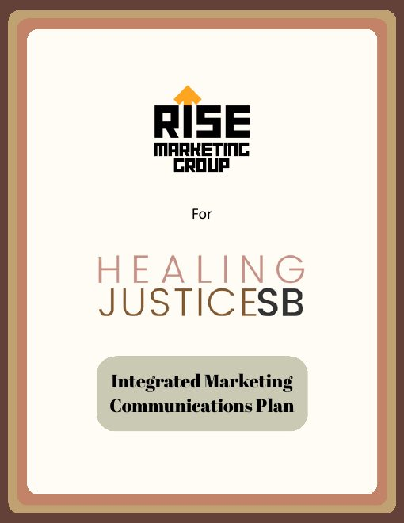
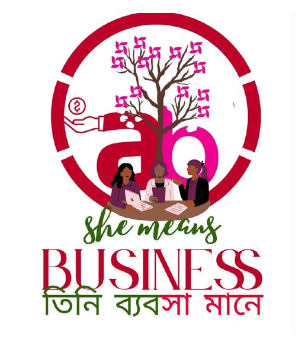
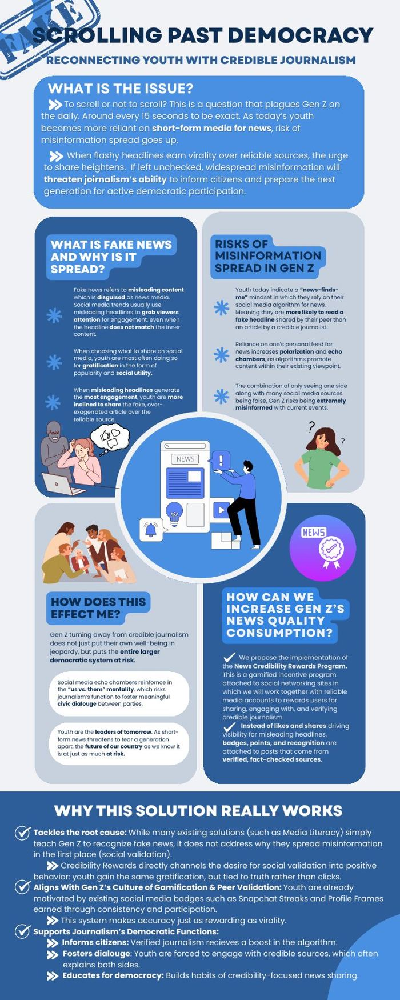
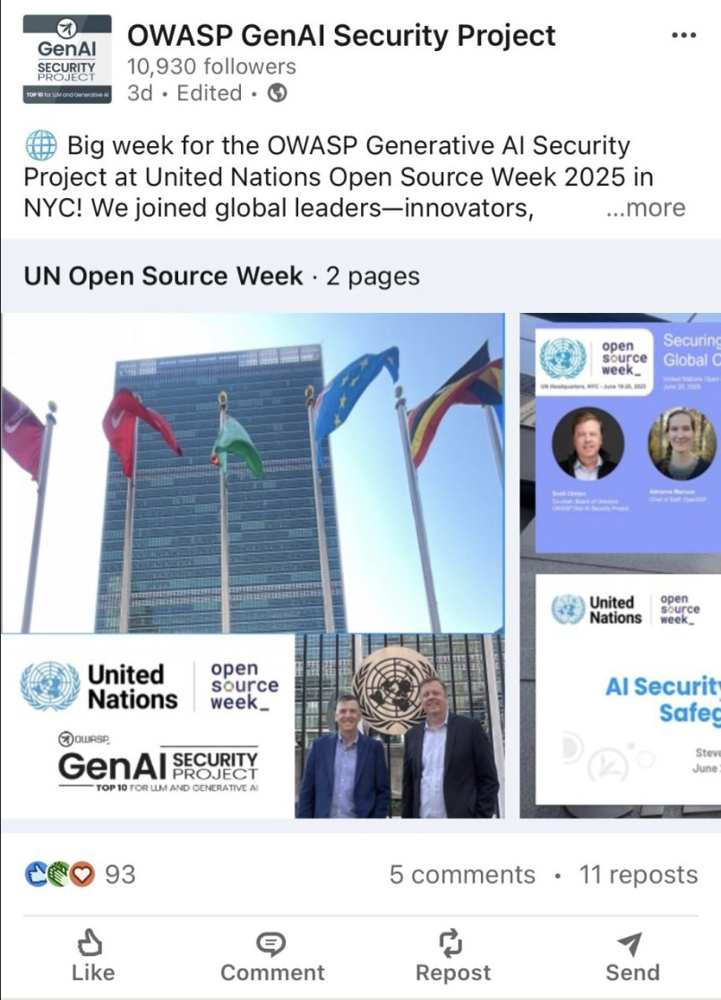

Communication major at UC Santa Barbara. I build campaigns, PR strategy and consumer research that stand up to the numbers.
Each strength below comes from finished work you can open in the projects section.
I take a brand from positioning to the finished concept: name, story, slogan, visual identity, social plan and launch event.
Shown in OVERFUELED for Diesel, Aurelia GT, She Means BusinessI design experiments and surveys, run the analysis, and turn the results into a recommendation a brand could act on.
Shown in the celebrity endorsement study and Digital Consumer BehaviorI write for funders, donors and partners, and I set measurable goals so social impact work can be tracked and reported.
Shown in OWASP at the UN, Healing Justice Santa Barbara, She Means Business, Scrolling Past DemocracyI explain complex research clearly for non-specialists, and I've delivered work as a solo author and on teams of two, four and seven.
Shown in the OWASP newsletter, the policy memo series and the IMC planOpen any project for the brief, what I did and the outcome, then read the full documents.
The OWASP Gen AI Security Project shares research, tools and guidance on securing generative and agentic AI. Since October 2025 I've written its monthly newsletter, turning technical releases into short updates the wider community can read and act on.
Each issue makes dense cybersecurity material approachable for a global audience, and keeps volunteers, sponsors and members connected to the project.
Healing Justice Santa Barbara (HJSB) runs year-round mentorship, cultural arts and community-care programs, but it relies heavily on grants and spends far less on communications than most nonprofits. As a Strategy Consultant at our student agency, Rise Marketing Group, I helped build a full integrated marketing communications (IMC) plan to grow and diversify its funding.

Create a campaign for Diesel that stays true to its provocative, youth-culture brand. I used Diesel's Rehab Denim program to make a statement about climate change and overconsumption, under the line "Heat up the rivalry, not the planet."
The campaign ties a sustainability message to a real product program and builds the event around shareable moments, so the cause becomes part of the brand story.
For a marketing class, invent a company that reflects the character of Italian business. Our team created Aurelia Gran Turismo, a boutique carmaker that values the journey over speed.
For a corporate social responsibility (CSR) course, we proposed a partnership between Absa, a South African bank, and BRAC, a global anti-poverty NGO. Absa brings financial expertise and microloans. BRAC brings its local presence in the communities. Together they give women-led small businesses financial skills, small loans and support networks.
The tree, a symbol of prosperity in Bengali culture, stands for the firms and the women growing together. The design works in both partners' brand shapes and colors, and the name appears in English and Bengali in the colors of the Bangladesh flag.

Brands spend heavily on celebrity endorsers. I tested whether endorsements raise brand trust (H1) and purchase intention (H2), building on prior research about parasocial relationships and brand attitudes.
I designed and ran a Google Forms survey with 46 UCSB students. Each participant saw two ads from each of five brands, one with a celebrity endorser and one without, and rated trust and purchase intention on 5-point scales. The analysis focused on the Uber Eats ad featuring Simone Biles, the endorser participants recognized most.
Both hypotheses were supported. The paper also sets out the study's limits, including the small, single-class sample, and what they mean for applying the findings.
The series is written for funders. It builds a case step by step, moves from research to recommendation, and ends with a visual pitch that can be read in a minute.

Through an in-depth interview with a fan of SEVENTEEN's CxM album HYPE VIBES, I mapped how the album's physical extras, like photocards and stickers, lead to connection with other fans and, deeper down, to the values of friendship and fun. I found that the existing ad missed that sense of connection and proposed a new one: fan after-parties on the world tour, filmed as a global "What gets you hype?" montage.
I ran a regression on how much each feature of Netflix's Standard with ads plan matters to a college-aged subscriber. Ads mattered most (53.37%), followed by price (30.05%), number of screens (9.33%) and video quality (7.25%). I recommended an ad-free, mid-priced plan with student-focused pricing.
I designed an A/B test of whether a creator people already follow sells GUIZIO's viral mini skirt better than an unfamiliar one. The test tracks each step from watch time to purchase in TikTok Shop analytics and uses parasocial attachment as a moderator, so GUIZIO can see which audiences celebrity influencers actually move.
I joined the OWASP Gen AI Security Project at UN Headquarters in New York for Open Source Week 2025 to run its social media coverage of the event. The role drew on photography, videography and writing, all on a live-event deadline.
The coverage brought OWASP's mission and projects to an international audience, raising its visibility with stakeholders, partners and open-source communities.

Internships, agency work and research roles where I've put these skills into practice.
Marketing & Outreach Intern, Author of the Official Newsletter
Strategy Consultant
Co-Author
Lead Data Analysis Researcher
Also: Lambda Pi Eta, the National Communication Association's honor society. Tools: Microsoft Office, Google Workspace, Canva, CapCut, beehiiv, StreamYard.
I'm a fourth-year Communication major at UC Santa Barbara, graduating in 2027, with a record of applying data analysis, strategic thinking and cross-functional collaboration to high-impact projects in PR and marketing.
I bring a mix of analytical rigor and communication expertise, from developing CSR proposals with measurable KPIs to optimizing engagement for global cybersecurity initiatives.
I'm open to PR, marketing and communications roles and internships.